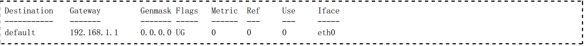

路由篇¶
查看Linux 内核路由(ipv4)¶
1)route
或
route -n

2）ip route show
3)ip route list table local
ip route list table main
添加路由(ipv4)¶
添加默认路由
1)ip route add default via 10.5.68.1 dev eth0 table test
添加到主机的路由
2)route add -host 192.168.1.2 dev eth0:0
3)route add -host 10.20.30.148 gw 10.20.30.40
添加到网络的路由
4)route add -net 10.20.30.40 netmask 255.255.255.248 eth0
5)route add -net 10.20.30.48 netmask 255.255.255.248 gw 10.20.30.41
6)route add -net 192.168.1.0/24 eth1
添加路由(ipv6)¶
1)ip -6 route add 2000::/3 via 3ffe:ffff:0:f101::1
2)route -A inet6 add 2000::/3 gw 3ffe:ffff:0:f101::1
3)ip -6 route add 2000::/3 dev eth0 metric 1
4)route -A inet6 add 2000::/3 dev eth0
5)route -A inet6 add default gw 2001:250:3000:2:2c0:95ff:fee0:473f
删除路由(ipv4)¶
1)route del -host 192.168.1.2 dev eth0:0
2)route del -host 10.20.30.148 gw 10.20.30.40
3)route del -net 10.20.30.40 netmask 255.255.255.248 eth0
4)route del -net 10.20.30.48 netmask 255.255.255.248 gw 10.20.30.41
5)route del -net 192.168.1.0/24 eth1
6)route del default gw 192.168.1.1
删除路由(ipv6)¶
1)ip -6 route del 2000::/3 via 3ffe:ffff:0:f101::1
2)route -A inet6 del 2000::/3 gw 3ffe:ffff:0:f101::1
3)ip -6 route del 2000::/3 dev eth0
4)route -A inet6 del 2000::/3 dev eth0
刷新路由表¶
ip route flush cache
三种路由类型¶
主机路由
主机路由是路由选择表中指向单个IP地址或主机名的路由记录。主机路由的Flags字段为H。例如，在下面的示例中， 本地主机通过IP地址192.168.1.1的路由器到达IP地址为10.0.0.10的主机。

网络路由
网络路由是代表主机可以到达的网络。网络路由的Flags字段为N。例如，在下面的示例中，本地主机将发送到网络 192.19.12的数据包转发到IP地址为192.168.1.1的路由器。
默认路由
当主机不能在路由表中查找到目标主机的IP地址或网络路由时，数据包就被发送到默认路由（默认网关）上。默认路由 的Flags字段为G。例如，在下面的示例中，默认路由是IP地址为192.168.1.1的路由器。
设置路由转发¶
1)临时生效
echo ‘1’ >/proc/sys/net/ipv4/ip_forward
警告
重启后配置失效
2)永久生效
sysctl -w net.ipv4.ip_forward=1
或
echo “net.ipv4.ip_forward = 1” >>/etc/sysctl.conf
警告
别忘记使用 sysctl -p 是配置生效
3)查看系统目前支不支持路由转发
sysctl net.ipv4.ip_forward